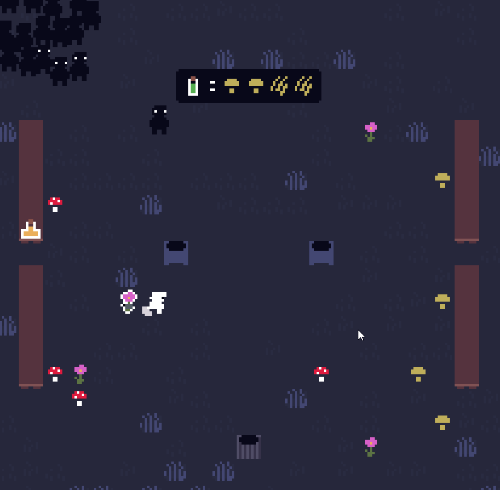
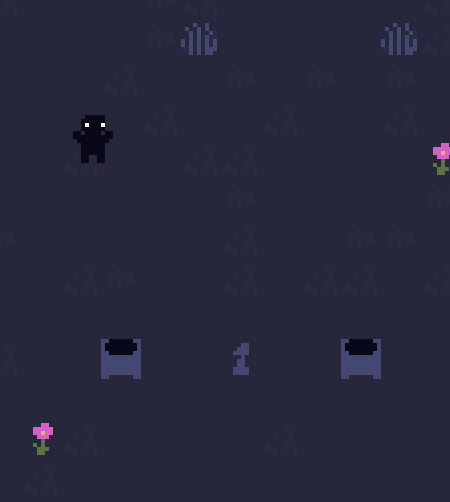
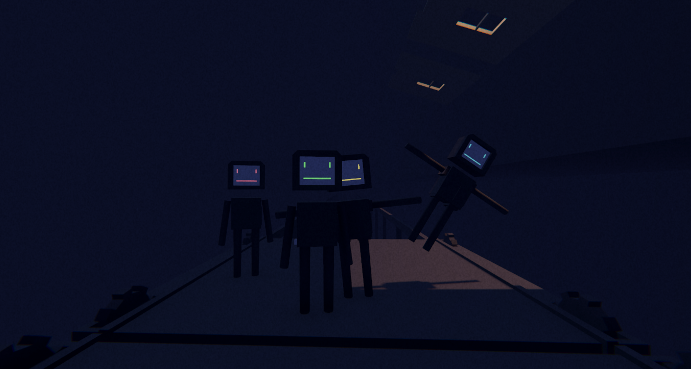
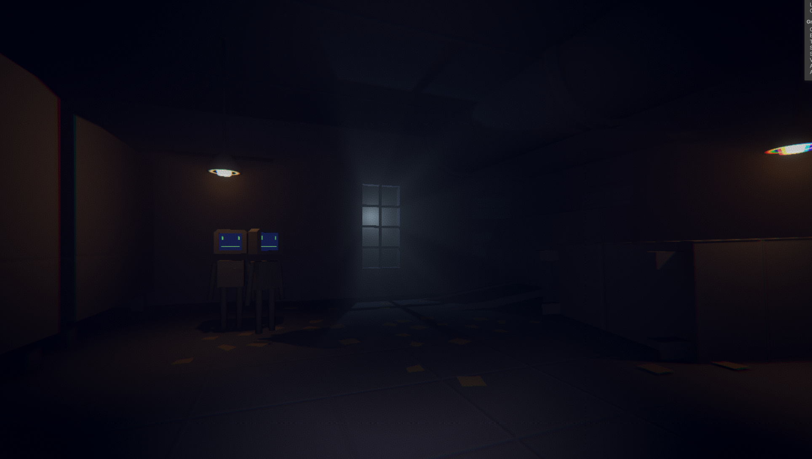
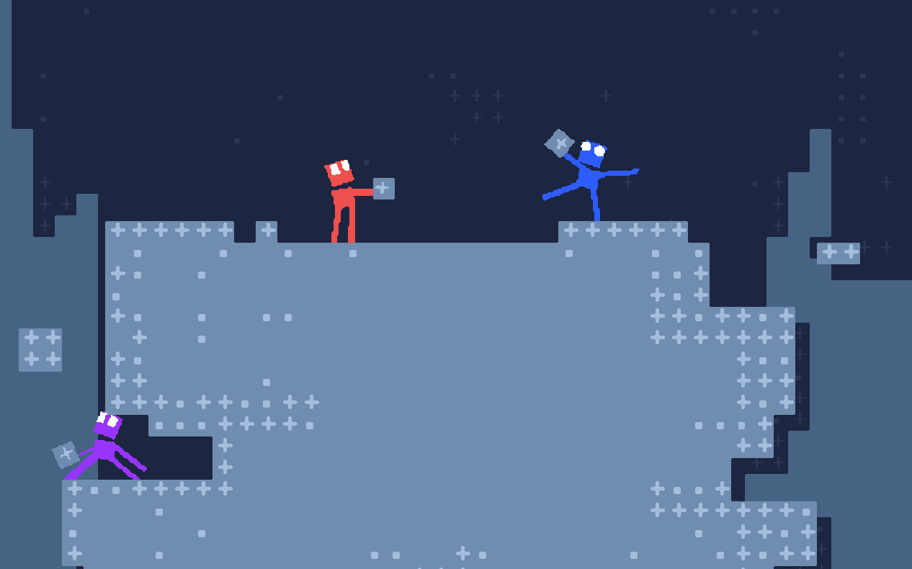
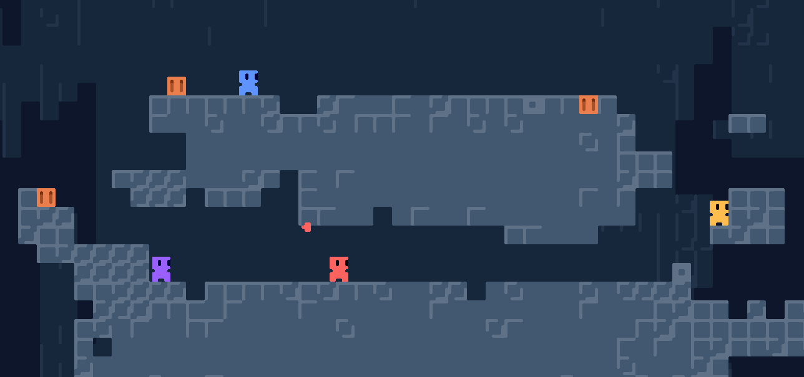

Dear SMG Studio
My name is Maxwell Vuksan and I am a software and game developer from Adelaide, Australia.
You can see some of my recent work below
Commercial Releases
Snapshots is a game about organizing messy spaces and discovering secrets. It was developed in Unity3D and released onto Steam.

Prototypes
A physics based multiplayer game about building and competing through obstacle courses. It is currently being developed in Unity3D


A collaborative game about brewing different potion recipes.


A 2d platformer exploring dynamic lighting and procedual animation


A level editor which prerenders complex voxel based enviroments.


A modular audio synthesizer. Combine signals to produce an evolving soundscape.

A voxel terrain visualization driven by perlin noise.


Concepts



